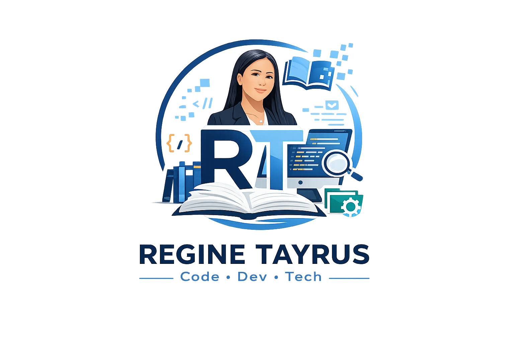

GitHub Projects
This is a GitHub profile showcasing Regine Mae Tayrus as a Computer Science student who is passionate about technology and creating meaningful applications. It highlights her programming skills, web development, app development, UI design, and interest in solving everyday problems through technology.
VIEW GITHUB.png)